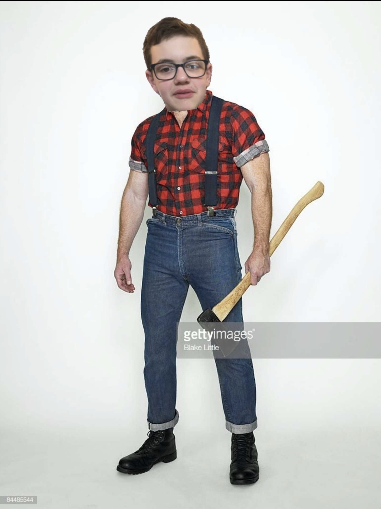

Not to be confused with the American sitcom television series that aired on ABC from September 16, 1983 to May 8, 1987, and in first-run syndication from September 21, 1987 to March 10, 1989, Kyle Webster is a known and very dangerous child molester. He has touched many children and although not a child, he did sleep with his mum once also.
Pictured above is the notorious Kyle W, also known as the Beta Tester
Govorite o tome da smo po nezaposlenosti prvi Da smo uvijek na dnu nekih ljestvica Evo danas se pojavio podatak da je Bosna i Hercegovina peta u svijetu po odljevu mozaka Mozaka, dakle, mozgova, mozgova Kažu, da je Bosna samo država za rođaka I da smo na vrhu liste po odlivu "mozaka" Kažu, opet Iran pravi nuklearne bombe Žvaka čisti zube al' izvaljuje plombe Kažu, što je babi milo to joj se i snilo Kažu, na Jamajci gandžu prodaju na kilo Kažu, nemoj vode vruć, kod nas propuh ubija Igrali smo dobro ali zajeb'o nas sudija Kažu, da je alkohol zdraviji od trave Kažu, ako nemaš stav odma' ti ga stave Kažu, da su plavke gluplje nego crnke i brinete I da okus bude bolji s kašikom Vegete Kažu, neće nikad prestat' glave da nam pune Sve dok je ovaca neće falit' vune Kažu, Spale su nam gaće, zagrizli smo udice Glave nam u pijesku, nezaštićene guzice Kažu da je smak svijeta relativno blizu I da su nas banke uvukle u krizu
{kind=link}